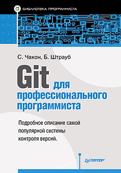

Книги для программистов | |
Совершенный код. Мастер-классБолее 10 лет первое издание этой книги считалось одним из лучших практических руководств по программированию. Сейчас эта книга полностью обновлена с учетом современных тенденций и технологий и дополнена сотнями новых примеров, иллюстрирующих искусство и науку программирования. |
Меню |
Git для профессионального программистаЭта книга представляет собой обновленное руководство по использованию Git в современных условиях. С тех пор как проект Git - распределенная система управления версиями - был создан Линусом Торвальдсом, прошло много лет, и система Git превратилась в доминирующую систему контроля версий, как для коммерческих целей, так и для проектов с открытым исходным кодом. |
|
| 2022 | |